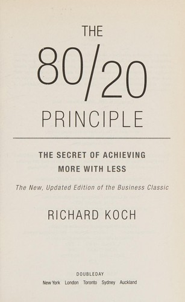

Thư viện review
| Bìa | Tên sách | Tác giả | Trích đoạn |
|---|---|---|---|
 |
Nguyên Lý 80/20 | Richard Koch | 80% kết quả đến từ 20% nguyên nhân — người hiểu nguyên lý này không cố làm nhiều hơn mà tập trung vào đúng 20% để đạt nhiều hơn với ít nỗ lực hơn. |
 |
Đắc Nhân Tâm | Dale Carnegie | Bí quyết chinh phục bất kỳ ai không nằm ở tài năng hay địa vị — mà nằm ở khả năng khiến người khác cảm thấy quan trọng, được lắng nghe và tôn trọng thực sự. |
 |
Khởi Nghiệp Tinh Gọn | Eric Ries | Phần lớn startup thất bại vì xây sản phẩm mà không ai cần. Build–Measure–Learn: xây dựng nhanh, đo lường thực, học từ dữ liệu để rút ngắn thời gian từ giả định đến sự thật. |
 |
Chiến Lược Đại Dương Xanh | W. Chan Kim & R. Mauborgne | Thay vì cạnh tranh khốc liệt trong thị trường đã có, hãy tạo không gian thị trường mới không có đối thủ. Value Innovation cho phép tạo giá trị vượt trội và giảm chi phí đồng thời. |
 |
Sức Mạnh Của Sự Tập Trung | Canfield, Hansen & Hewitt | Thành công không đến từ làm nhiều thứ — mà đến từ tập trung nhất quán vào việc quan trọng nhất và xây dựng thói quen đúng mỗi ngày. |
 |
Nguyên Tắc | Ray Dalio | 40 năm nguyên tắc từ người sáng lập quỹ đầu tư lớn nhất thế giới. Thành công bền vững đến từ hệ thống nguyên tắc rõ ràng, kiểm chứng qua thực tế, áp dụng nhất quán. |
 |
Tư Duy Nhanh Và Chậm | Daniel Kahneman | Não người vận hành theo Hệ thống 1 (nhanh, cảm tính) và Hệ thống 2 (chậm, lý tính). Phần lớn quyết định bị chi phối bởi Hệ thống 1 mà không hay biết. |
 |
Đừng Bao Giờ Đi Ăn Một Mình | Keith Ferrazzi | Networking không phải trao đổi danh thiếp — mà là xây kết nối chân thật bằng cách cho đi thực sự, liên tục, không điều kiện, trước khi bạn cần bất cứ thứ gì. |
 |
Lãnh Đạo Phục Vụ | Ken Blanchard | Lãnh đạo thực sự không phải về quyền lực — mà là về phục vụ: đặt nhu cầu và sự phát triển của người khác lên trên lợi ích cá nhân. |
 |
Mục Tiêu | Eliyahu M. Goldratt | Tiểu thuyết kinh doanh hiếm có: Alex Rogo có 3 tháng để cứu nhà máy. Sự thật tiết lộ: tối ưu từng bộ phận không tạo ra hệ thống tối ưu. |
 |
Trí Tuệ Tài Chính | Karen Berman & Joe Knight | Con số tài chính không phải sự thật tuyệt đối — chúng chứa đựng giả định của con người. Hiểu điều đó giúp ra quyết định tốt hơn dù không phải kế toán. |
 |
Nhà Quản Trị Hiệu Quả | Peter F. Drucker | Hiệu quả không phải tài năng bẩm sinh — đó là kỹ năng có thể học. Nhiệm vụ cốt lõi của nhà quản trị không phải làm nhiều, mà là làm đúng việc. |
 |
Từ Tốt Đến Vĩ Đại | Jim Collins | Tại sao một số công ty bứt phá lên tầm vĩ đại trong khi những công ty khác mãi dậm chân ở mức tốt? Sau 5 năm nghiên cứu, Collins tìm ra câu trả lời bất ngờ. |
 |
Cha Giàu Cha Nghèo | Robert T. Kiyosaki | Tại sao người giàu ngày càng giàu hơn trong khi tầng lớp trung lưu mãi chật vật? Câu trả lời không nằm ở thu nhập — mà nằm ở cách bạn hiểu và dùng tiền. |